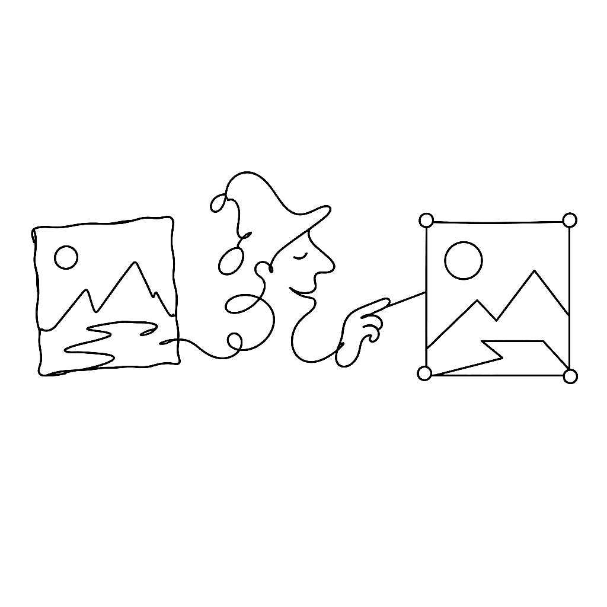
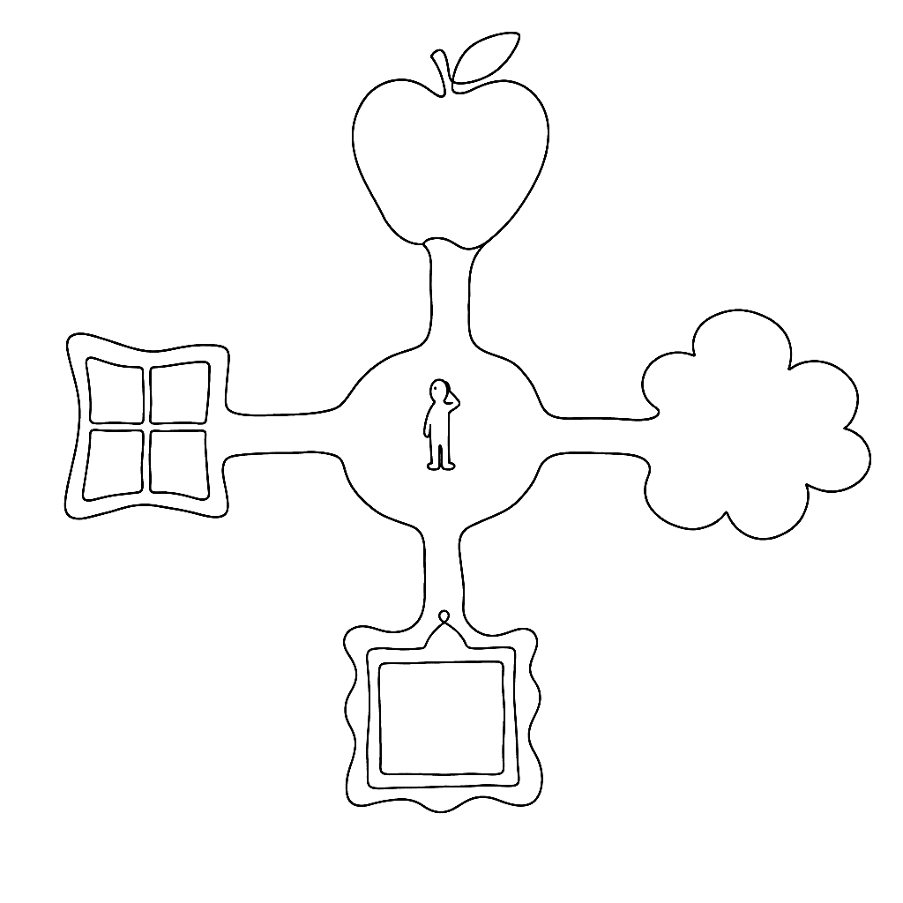
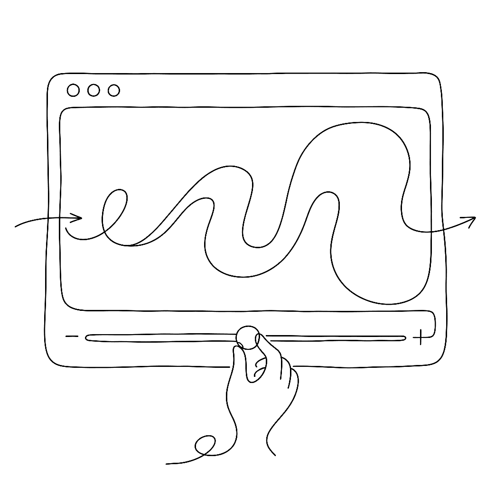
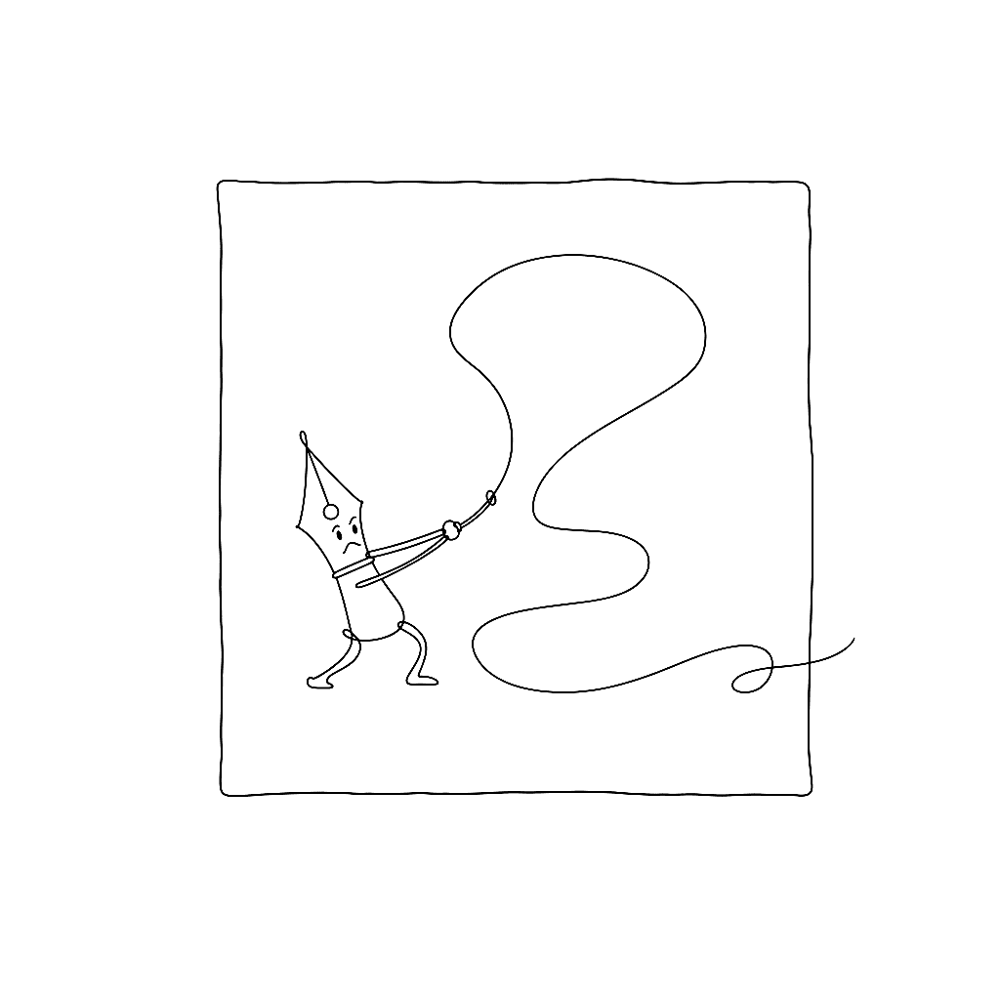
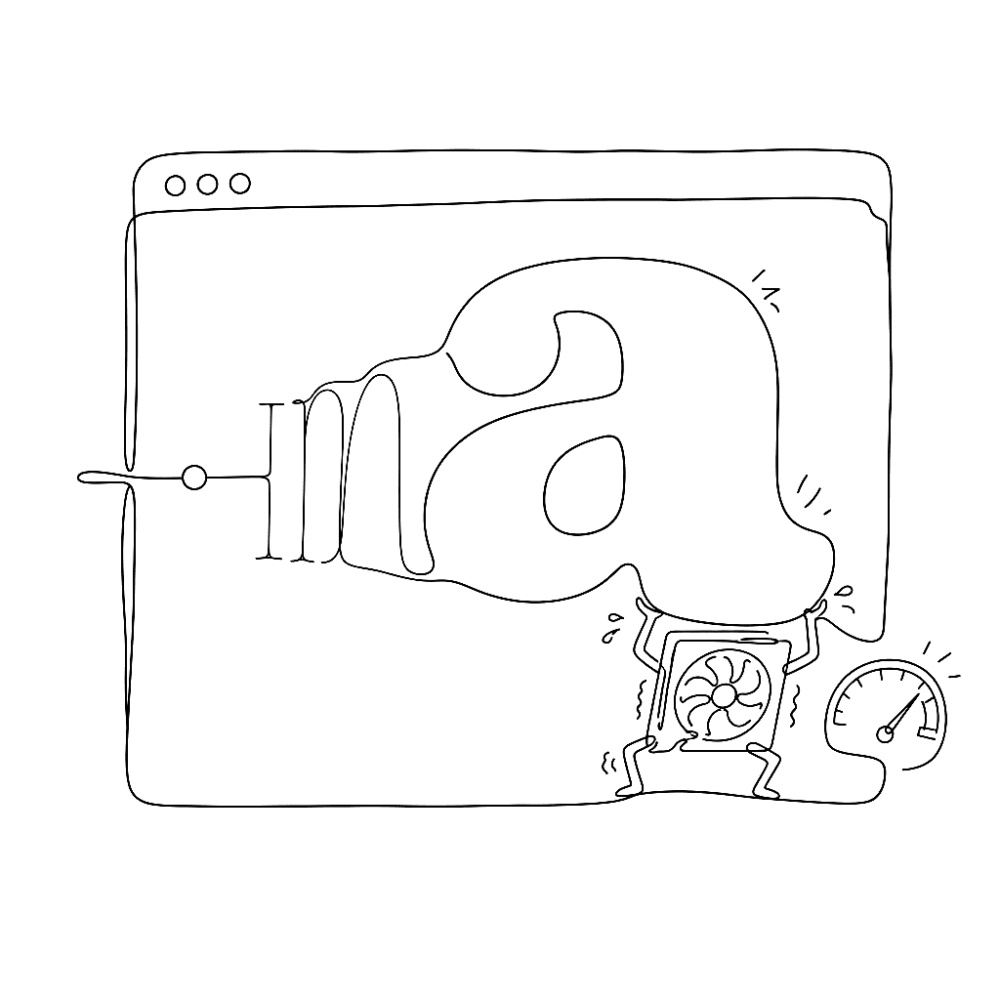
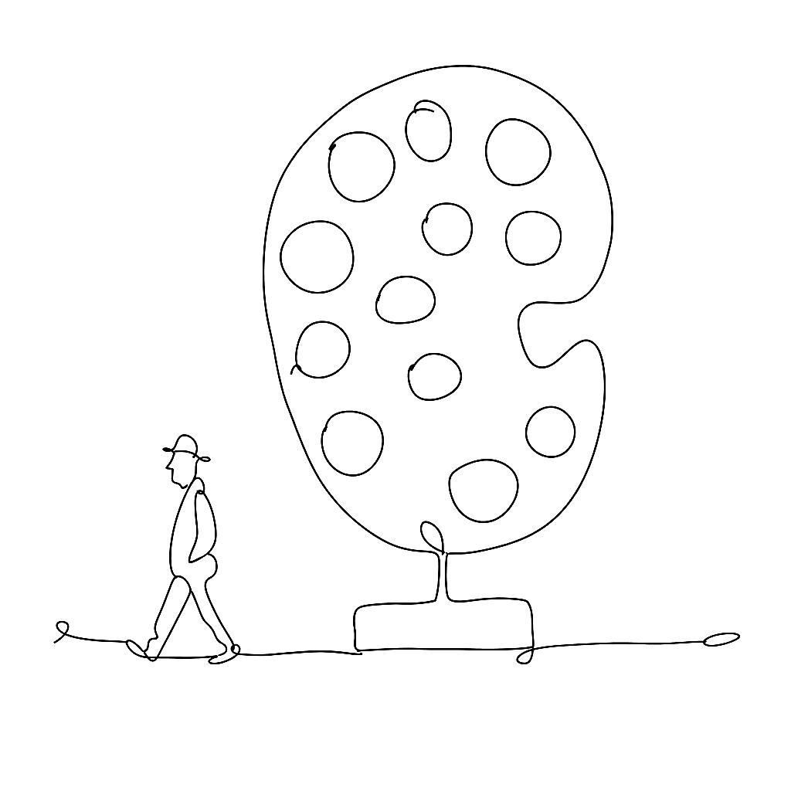
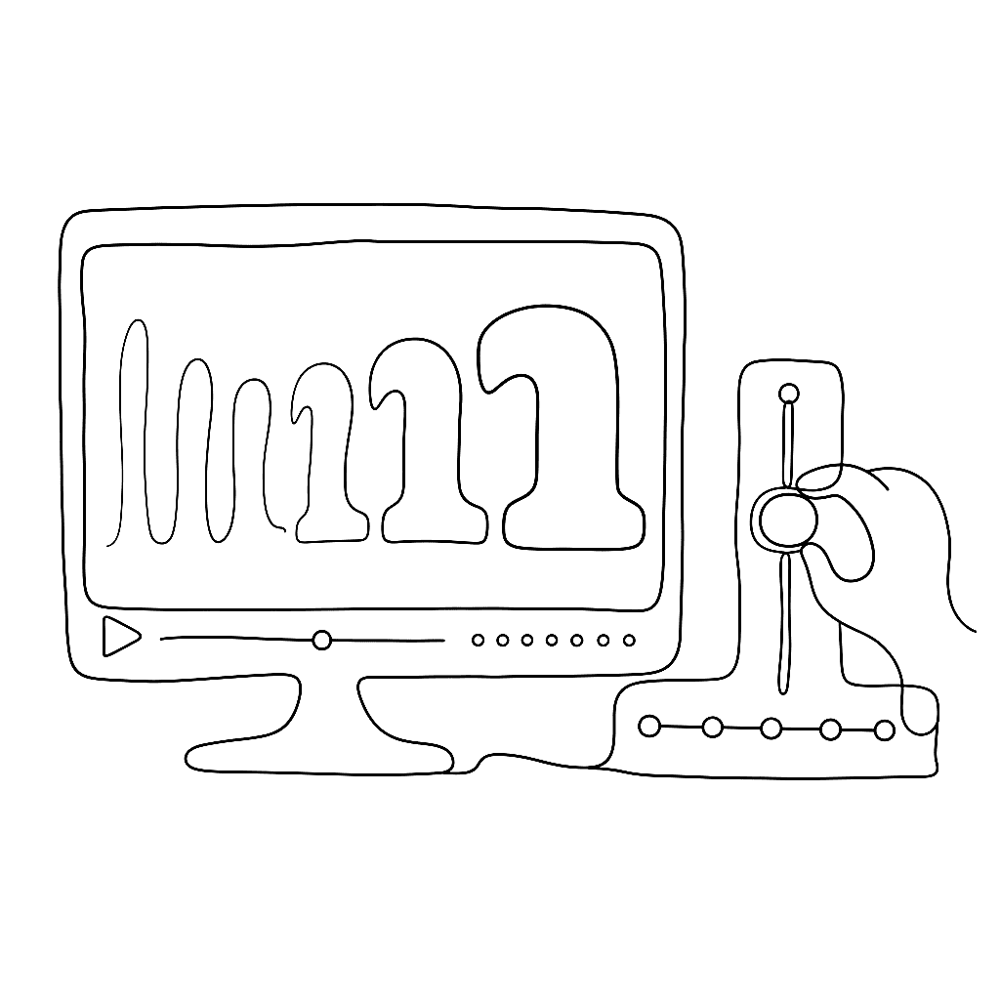

From bland to bold: turning any image into a vector with Vexy Lines

A photograph is not a vector. A sketch is not a vector. A scanned logo is definitely not a vector. Vexy Lines exists to fix that, one image at a time.

A photograph is not a vector. A sketch is not a vector. A scanned logo is definitely not a vector. Vexy Lines exists to fix that, one image at a time.


In 2013, color OpenType looked like a standards argument with four exits. Apple had sbix. Google had CBDT/CBLC. Microsoft had COLR/CPAL. Adobe and Mozilla had SVG-in-OpenType. The question then was which proposal would win. In 2026, the answer is less tidy and more useful: they all became real OpenType color font formats, but they did not become equally useful everywhere.


In 1979, a Wall Street Journal illustrator named Kevin Sprouls introduced a stipple portrait to the paper. Forty-five years later, the same form is still running on the front page. That is unusual enough to warrant an explanation.

Nothing gets old faster than a font format — until a client opens a twenty-year-old file and suddenly it is everybody’s problem again.

The generative line has a genealogy. It runs from a physics lecture in 1815 through a children’s toy in 1965 and a university lab in 2001, and it ends — so far — with an algorithm that sold for five million dollars.

The fine-line patterns on a banknote are a security feature. A British engineer made a toy of them in 1965 and sold 30 million units.
Scannerlicker is Fábio Duarte Martins’s foundry, and his testimonial is one of the few that actually names the FontLab features doing the work. It is, accidentally, a short manual on what to learn first.

Frances Kent took her students to see Warhol’s Campbell’s Soup show, came back to Immaculate Heart College, and turned supermarket packaging into devotional art.

A contour line is a lie your map tells you so you can understand the truth. No hill has a line around it. The line is what you draw when the hill refuses to fit on a flat page.

Andy Warhol started screenprinting in August 1962. His explanation: “I wanted something stronger that gave more of an assembly line effect.”

A line can carry tone, texture, shadow, and emotion — and never once pretend to be a photograph. That is the whole argument of five centuries of printmaking, made with a burin, a graver, and eventually a stylus.

A one-bit display has no grey. Dithering is the sixty-year argument that it doesn’t need one.

Georges Seurat spent two years applying roughly 220,000 dots to a canvas. The painting works because the dots don’t blend on the canvas. They blend in your eye.

Photography arrived in the 1830s. Printing photographs in newspapers took another fifty years.

Typography on screen used to mean “pick a weight and hope for the best.” Now the weight can follow the user.

Every OpenType feature — ligatures, kerning, small caps, Arabic joining forms — runs through two tables and one engine. Most type designers know the features exist. Fewer know what the tables look like from the inside.
Acqua Aldina is a variable serif drawn by hand. Baker Street 221B is a three-font Sherlockian set with a font for the detective, the doctor, and the housekeeper. Yuri Gordon’s catalogue does not pretend to fit one mood, and he’s open about why FontLab works for the spread.
Most type designers know their fonts will be rendered differently on macOS and Windows. Fewer know the names of the four pieces of plumbing responsible. The names are worth knowing, because the plumbing shapes everything.

The first letter is the hardest. The FontLab TV glyph construction episode is a calm, deliberate walkthrough of drawing one letter — n — from a blank glyph cell to a finished, point-clean contour you can build a font around.

Browsers have shipped robust font-variation-settings support since 2018, and animating those axes works the way the rest of CSS animation works. That is a small miracle, and the people who built it deserve a round of applause.

A colour font with one palette is a coloured drawing. A colour font with thirty palettes is a theme system. The difference is CPAL, and most people walk right past it.
In 2013, four companies each decided the same thing: OpenType needed color. They each decided it differently.

FontLab TV has published a 50-hour video course on variable font design, organized into 25 playlists. It runs from absolute fundamentals — coordinates, contours, metrics — through production, hinting, export, and font business basics.

Engraving is a useful lie. A hedcut looks old, sober, authoritative, and a little expensive — even when it was made yesterday.
Six programmes shape almost everyone working in type design in 2026. All six are small. Most are slow by design.